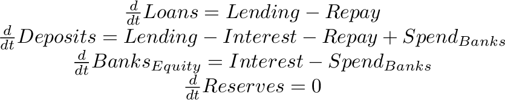
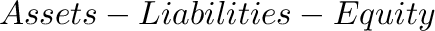

A Godley Table employs double-entry bookkeeping to create dynamic models of monetary transactions. It can also be used to build dynamic models of systems based on transitions between exclusive categories--such as epidemiological systems like SEIRD models of disease transmission.
A Godley Table uses the rules of accounting to create consistent equations to describe financial flows. The essential rules are that:
 must equal zero on each row.
must equal zero on each row.

generates the following set of differential equations:

Stocks are thus completely defined by the Godley Table itself as equations in a set of coupled differential equations. For this reason, when placed on the canvas, each stock has an output but no input. Flows, on the other hand, have both inputs and outputs, and have to be fully defined on the canvas itself.
For complete details see Godley tables.